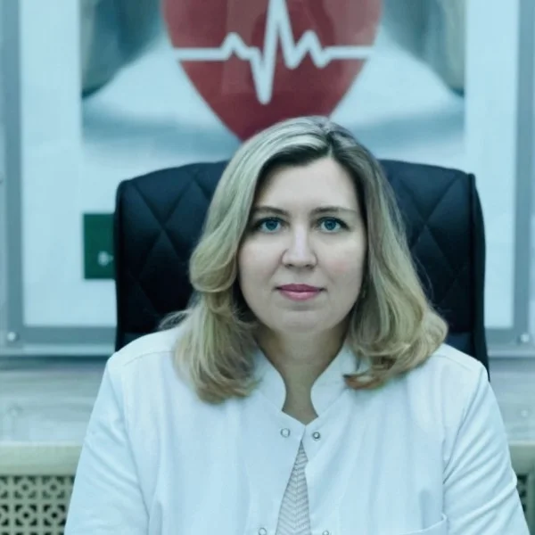

Проводит лечение на аппарате транскраниальной электротерапии (ТЭС)
Показания к применению. Транскраниальная электротерапия терапия показана практически при всех заболеваниях, так как любая болезнь или патологический процесс в организме нарушают состояние центральной нервной системы, адаптационно-приспособительные механизмы. Многолетним клиническим опытом доказана эффективность применения транскраниальной электротерапии в следующих областях:
Психофизиологические расстройства:
умственное и физическое переутомление, раздражительность, слабость, эмоциональная неустойчивость, тревожность, синдром "хронической усталости"; нарушения сна; неврологические, психические расстройства с депрессиями и неврозами; стрессы, в том числе в условиях военно-профессиональной адаптации, посттравматический стресс, спортивные стрессы, стресс при синдроме утраты.
Неврология:
нарушения памяти различного генеза; церебральный атеросклероз и нарушения мозгового кровообращения; диэнцефальный синдром; энцефалопатии различного генеза; гипоталамический криз; последствия клещевого энцефалита; детский церебральный паралич; спастические формы двигательных нарушений центрального генеза (спастический гемипарез); спастические формы двигательных расстройств центрального генеза с поражением верхних и нижних конечностей (спастический тетрапарез); гиперкинетические формы двигательных расстройств (атетоз, атетоидный гиперкинез в сочетании со спастическим тетрапарезом, ги-перкинез с сопутствующим псевдобульбарным синдромом); депрессивные состояния, головные боли напряжения, гиперактивность, психогенный энурез и/или энкопрез; агрессивность, страхи; нервные тики; задержки нервно-психического развития; проблемы обучения; моторная афазия; сенсорная афазия; моторная и сенсорная алалия; заикание; амблиопия; нистагм, косоглазие; сенсоневральная тугоухость.
Кардиология:
ишемическая болезнь сердца; гипертоническая болезнь I-II степени; гипотония; нейроциркуляторная дистония.
Болевые синдромы:
головные боли различного генеза; спондилогенные боли; послеоперационные боли; невриты, невралгии, глоссалгия, фибромиалгия; боли при деформирующих артрозах; болевые синдромы при заболеваниях внутренних органов; фантомные боли; болевые синдромы у онкологических больных.
Заболевания органов дыхания:
бронхиальная астма; бронхит (в том числе токсический, пылевой), пневмония; хроническая обструктивная болезнь легких; острые респираторные инфекции дыхательных путей.
Гастроэнтерология:
язвенная болезнь желудка и 12-перстной кишки; гастрит (острый, хронический); дуоденит; хронический специфический и неспецифический колит; холецистит хронический; панкреатит (острый, хронический); энтериты; дискинезия кишечника; дискинезия желчного пузыря и желчных путей.
Урология:
пиелонефрит; гломерулонефрит; почечная недостаточность; цистит; доброкачественная гиперплазия предстательной железы.
Гинекология:
предменструальный синдром; нарушения менструального цикла; токсикозы первой половины беременности; воспалительные заболевания женских тазовых органов различного генеза.
Эндокринология:
гипотиреоз; нарушение функции надпочечников; иммунодепрессивные состояния.
Наркология:
алкоголизм, опийная наркомания и токсикомания, патологические влечения; абстинентный синдром, постабстинентные аффективные нарушения; интоксикация печени.
Дерматология, косметология:
дерматозы, поверхностная себорея, псориаз, трофические язвы, гнойничковые поражения кожи, зуд, экзема, нейродермиты, экссудативный диатез; эластоз кожи, изменения цвета кожи.
Хирургия, травматология:
травматические раны; подготовка к операциям и послеоперационное ведение; ожоги и отморожения; травма, в том числе множественная и сочетанная.
Спортивная медицина:
непереносимость нагрузок, в том числе пиковых нагрузок, спортивные стрессы, проблемы адаптации к смене часовых поясов, проблемы акклиматизации, спортивные травмы.

Материалы института: itvm.ru ↗ · Информация на 26 октября 2026 года.